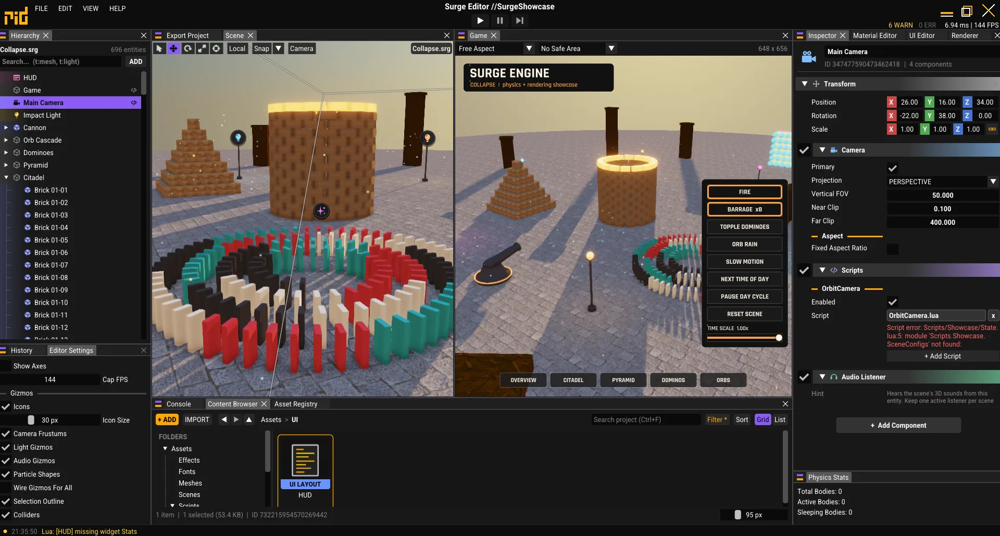

Batched, non-blocking uploads
Buffer and image data go through a recycled staging ring into one upload command buffer, submitted right before the frame. No one-time submits, no vkQueueWaitIdle.
Mobile-first 2D / 3D game engine
I started it in 2021, after my first engine, Spike. It's C++20 on Vulkan 1.1, with Jolt physics, Lua scripting and its own editor. Android is the main target, so everything has to fit a phone's heat, battery and memory budget first. On desktop it can afford heavier shadows, GTAO and a lot more lights.
Move to push · Click to fire · R to rebuild
If a feature can't be cheap on a phone, it doesn't go in. Desktop-only extras (more shadow cascades, GTAO, more lights) are optional and never make the Android path slower. In practice: fewer draw calls, fewer render passes, tile-friendly load/store ops, and no allocations every frame.
Platform defaults straight from FrameBlackboard.hpp. Every value is editable live in the Editor's Renderer panel, with Mobile/Desktop preset buttons.
Buffer and image data go through a recycled staging ring into one upload command buffer, submitted right before the frame. No one-time submits, no vkQueueWaitIdle.
Swappy presents on vsync at a target rate, so a 120 Hz phone doesn't burn its battery rendering 120 frames nobody asked for.
The 3D scene renders at 0.5–1.0×, UI and post-processing stay at native resolution. 0.8 on Android, 1.0 on desktop.
A VkPipelineCache saved to device storage and header-validated against the current GPU and driver. Warm starts skip pipeline compilation.
Each pass says what it reads and writes, and RenderGraph::Compile() sorts them and works out the barriers and load/store ops. Culling and uploads happen in Prepare, before any render pass starts. If a whole group has nothing to draw it's skipped: no begin, no clear, no store. On mobile GPUs that's real bandwidth saved.
Click a group to toggle whether it has work this frame.
Thin, handle-based RHI over Vulkan 1.1. Layouts and vertex attributes generated from SPIR-V reflection.
Up to 16 emitters per effect, built from plain-data modules. Curves and gradients baked to 64-entry LUTs.
Jolt Physics on a fixed 1/60 s step with render interpolation.
Lua 5.4 + sol2, compiled to bytecode at cook time, sandboxed, full tracebacks.
require modules that work the same on AndroidA retained widget tree with Unity-style rect transforms and a canvas scaler.
Every asset has a stable UUID; the runtime only ever loads cooked binary data.
miniaudio, played from memory. Streamed clips decode as they play, the rest decode once and share PCM.
Keyboard, mouse, multi-touch with stable small IDs, and gamepads (XInput on Windows, joystick events on Android).
EnTT-backed scenes, hierarchies, deferred destruction and frame-end callbacks.
I stress test Surge with scenes like this one (the real thing is in the screenshots below). This version runs in your browser: blocks sleep until something hits them, the whole castle is one instanced draw, and the slider slows time down without slowing the frame rate. Click the castle.
This page simulates with cannon-es in your browser. Surge itself runs Jolt Physics natively: the Toytown demo in the gallery throws 500+ bodies around.
Scripts declare Properties that show up in the Inspector as typed fields. Values are saved sparsely per entity and written once before OnCreate, so they cost nothing per frame.
OnCreate, OnEnable, OnFixedUpdate, OnUpdate, OnLateUpdate, OnDestroyPhysics.Raycast, Particles.Play, Scene.Load, Time.*, Storage.*SurgeAPI.luaUnity-style Scene views (as many as you want, each with its own camera and render graph), a Game view that can fake phone safe areas, undo/redo, and one-click Windows and Android builds.

Shipped games can't load a .gltf, on purpose. The Editor cooks every source file into a small binary format first, so the Player doesn't carry importers or decoders around, and it loads faster.
No submodules, no package manager. Every dependency is vendored with its own CMake list.
Visual Studio with the C++ Clang (ClangCL) tools, CMake 3.20+ and the Vulkan SDK.
git clone https://github.com/ridhwandll/Surge_ExpiredScripts\WindowsGenProjects.batmsbuild build/Surge.slnx -p:Configuration=ReleaseStart project: Editor. The working directory is always the repository root.
One script installs the whole toolchain without Android Studio: JDK 17, SDK, NDK and CMake, pinned to what Gradle expects.
Scripts\AndroidSetup.batThen export an APK or AAB from the Editor's Export panel, install it on a device and watch its logcat in the Console. Vulkan 1.1 needs Android 10 (API 29) or newer.
“Why Surge? For the love of the game.”
Roadmap, straight from the README: ship a game with it, an Apple backend, get a girlfriend?